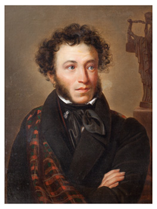

Александр Пушкин родился на исходе XIII века в 1799 г. и умер в расцвете лет в 1837 г. получив тяжелое ранение в живот на дуэли. А. С. Пушкин – светоч русской литературы: поэт–писатель–драматург. Из-под его пера вышли:
роман в стихах «Евгений Онегин»
повесть «Дубровский»
поэма «Руслан и Людмила»
Пушкин переложил на литературный язык сказки своей няни, и они вошли в золотой фонд детской литературы.
